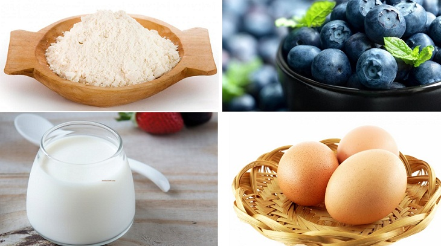

07/Jul
How to make Blueberry muffin

Blueberry muffin with sweet and sour taste is not boring, how to make the cake is not difficult. What are you waiting for, foodies, let's go to the kitchen to make a beautiful little cake to treat the whole family!
Ingredients for making Blueberry muffin
- Eggs: 1 egg
- Flour: 150 gr
- Non-sugar fresh milk: 120 ml
- Lemon juice: 30 ml
- Olive oil: 120 ml
- Sugar: 120 gr
- Yogurt: 100 gr
- Baking powder: 5 gr
- Salt: 1/4 teaspoon
- Blueberry: 130 gr

Implementation tools
Oven, bowl, cake mold
How to processing KFC egg tart
Mix the flour
First, beat the eggs in a large bowl and then add 120ml of olive oil, 80ml of unsweetened fresh milk, then add 120g of sugar and beat until the mixture is fluffy and blended.
Next, add the yogurt and beat until the mixture is smooth.
Sift in the flour, baking powder, and 1/4 teaspoon salt. Beat until a smooth, smooth dough is formed.Blueberry filling
Blueberries are washed, drained and then put in a bowl of flour, mix well.
Line a muffin pan with a paper base, scooping the dough into each mold just enough for the muffins to rise. Add some blueberries on top and sprinkle some brown sugar.Bake
Preheat the oven for 10 minutes at 180 degrees, put the cake in and bake for about 25 minutes, then check if the cake is dry, you can take it out and enjoy.Finished product
Fluffy blueberry muffins are incredibly delicious and easy to make.